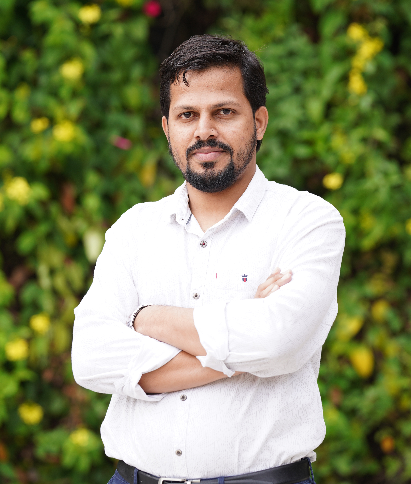

I am a doctoral candidate in the economics department at the Indian Institute of Management (IIM) Bangalore, India. In 2022-2023, I was selected for a DAAD-funded PhD Exchange Program in Germany. Before joining IIM Bangalore, I worked as a Research Fellow at U UNICEF India. I obtained an MPhil degree in Planning and Development from the Indian Institute of Technology (IIT) Bombay and a Masters in Economics from JMI, Delhi. My research interest lies in Economics of Education, Political Economy, and Development Economics.
